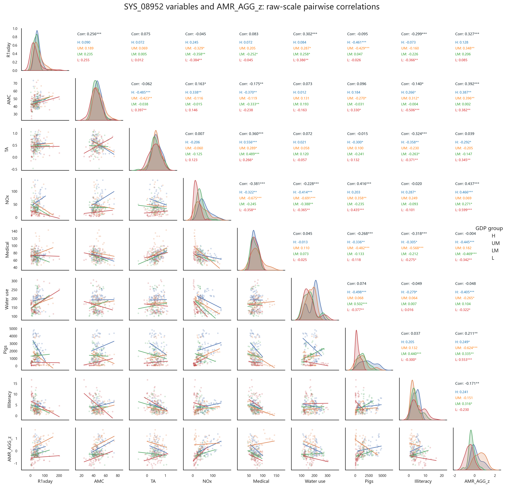
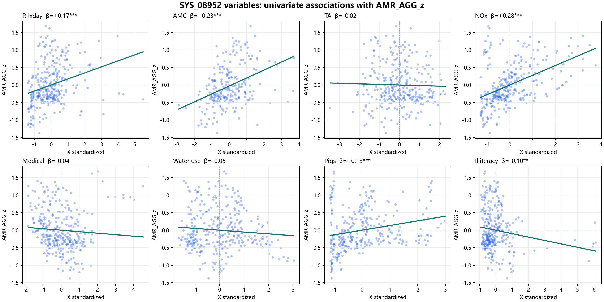
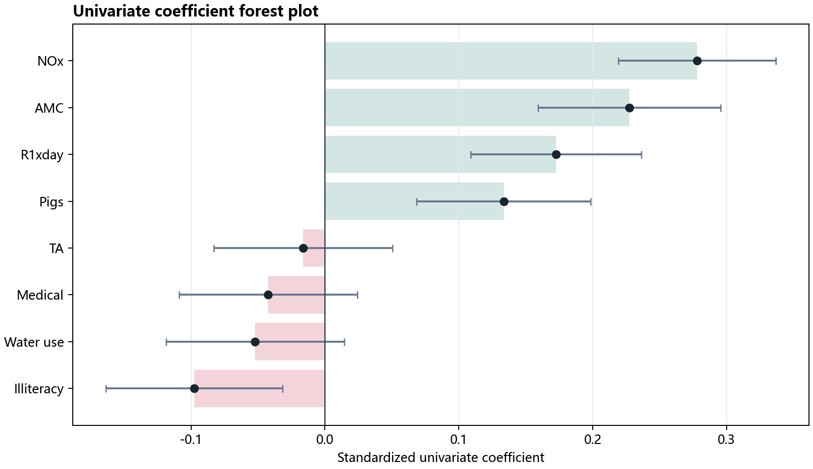
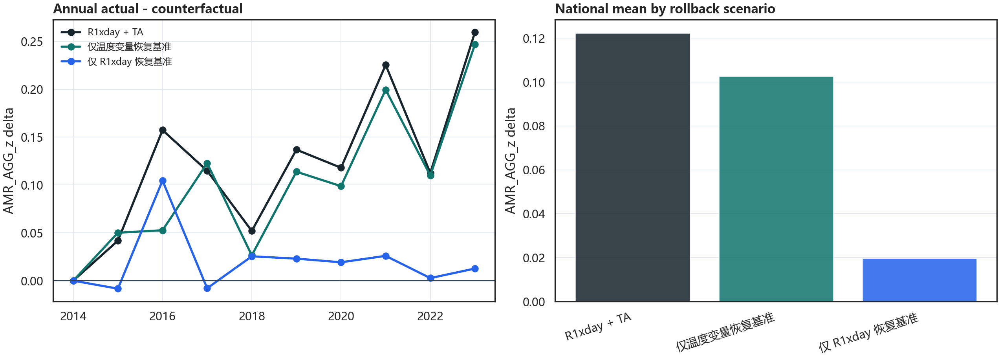
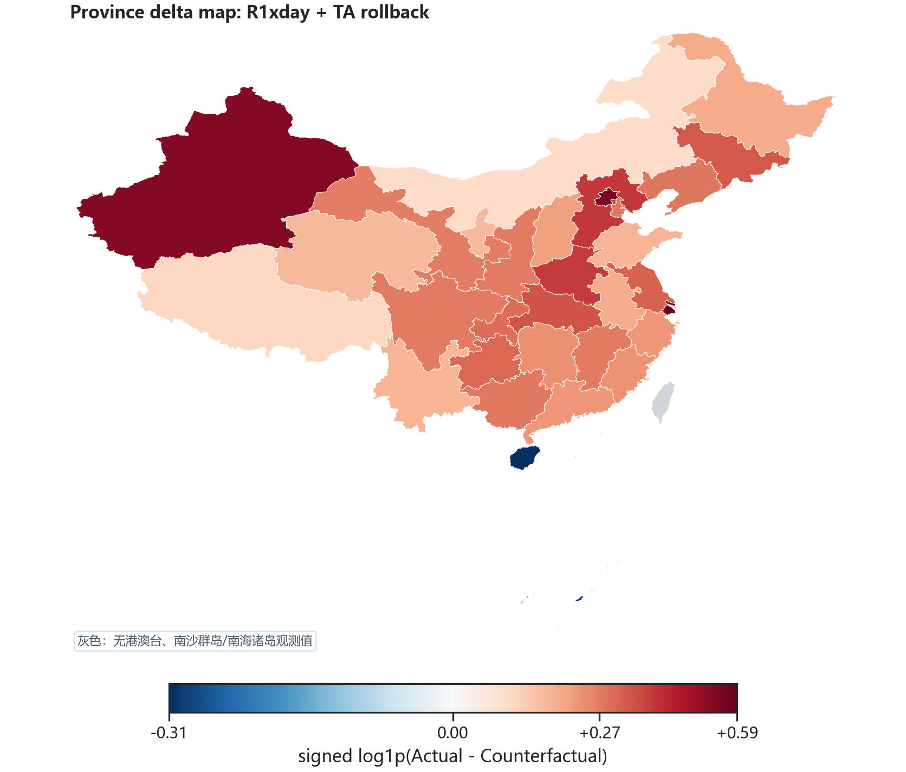
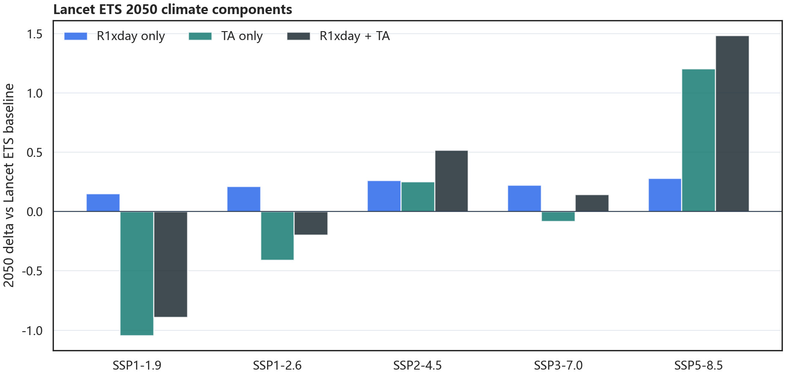
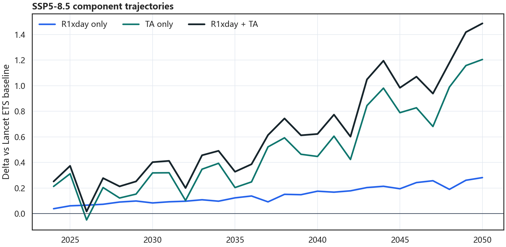
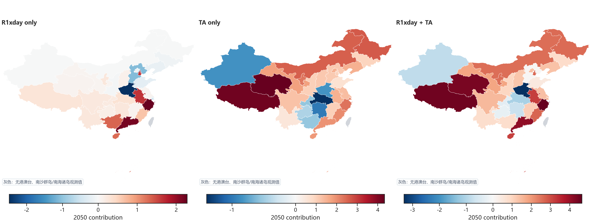
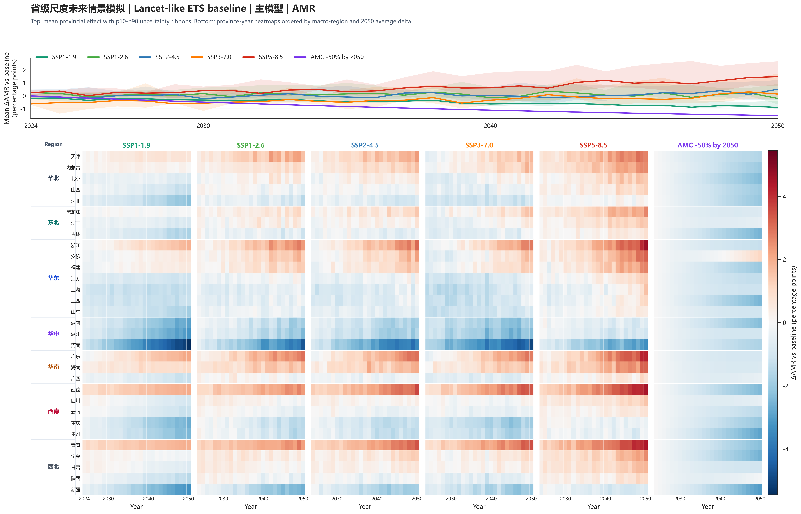

p=0.0469，极端单日降雨为正。
Final Full Analysis · generated 2026-05-01 19:44:39
SYS_08952 完整论文分析页
本页只服务最终论文写作：先做 SYS_08952 变量组的单因素探索，再呈现固定效应 Lancet 风格主表， 随后把 Bayesian SI、反事实推演和 Lancet ETS 未来情景分解补成可解释、可追溯、可写入论文的完整证据链。
主模型SYS_08952Province: No / Year: Yes
固定效应 R²0.458只保留 model R-squared
Bayes 主效应+0.133R1xday year-only posterior mean
反事实共同气候贡献+0.122R1xday + TA 恢复基准
2050 SSP5-8.5+1.487Lancet ETS baseline delta
1. Univariate Screening
先看 8952 变量组与 AMR_AGG_z 的单因素关系
单因素分析只回答“每个变量单独看时与综合耐药性指标是否同向变化”。它不控制其他变量，因此是探索和可视化，不是最终主结论。
读图规则：主图改成与
1 单因素分析/figs 一致的相关矩阵风格：
下三角为原始量纲散点与分组趋势线，对角线为分布，上三角为总体 Pearson 相关和按 GDP 四分位分组的相关。
标准化不会改变 Pearson 相关系数，但会抹掉变量原始尺度，所以旧的标准化散点图确实不如相关矩阵直观。



| 变量 | 标准化 β | 95% CI | p 值 | Pearson r | 解释 |
|---|---|---|---|---|---|
| 氮氧化物污染环境 | +0.278*** | [0.219, 0.337] | <0.0001 | +0.469 | 单因素层面呈正向且达到统计显著；进入多变量模型后还需看混杂调整。 |
| 抗菌药物使用强度抗菌药物压力 | +0.227*** | [0.159, 0.296] | <0.0001 | +0.392 | 单因素层面呈正向且达到统计显著；进入多变量模型后还需看混杂调整。 |
| R1xday气候：极端降雨 | +0.173*** | [0.109, 0.236] | <0.0001 | +0.292 | 单因素层面呈正向且达到统计显著；进入多变量模型后还需看混杂调整。 |
| 牲畜饲养 - 猪年底头数畜牧暴露 | +0.134*** | [0.069, 0.198] | <0.0001 | +0.226 | 单因素层面呈正向且达到统计显著；进入多变量模型后还需看混杂调整。 |
| 文盲比例社会经济结构 | -0.098** | [-0.163, -0.032] | 0.0038 | -0.165 | 单因素层面呈负向且达到统计显著；进入多变量模型后还需看混杂调整。 |
| 人均日生活用水量(升)供水与生活条件 | -0.052 | [-0.119, 0.014] | 0.1235 | -0.088 | 单因素层面呈负向但证据不足；主要作为背景探索结果。 |
| 医疗水平医疗系统/检测代理 | -0.042 | [-0.109, 0.024] | 0.2114 | -0.072 | 单因素层面呈负向但证据不足；主要作为背景探索结果。 |
| TA（°C）气候：温度 | -0.016 | [-0.083, 0.050] | 0.6330 | -0.027 | 单因素层面呈负向但证据不足；主要作为背景探索结果。 |
- 单因素结果用于筛选和描述，不应替代固定效应模型，因为它没有同时调整其他气候、污染和社会经济变量。
- 如果单因素与多变量方向不一致，论文中应优先以固定效应模型为主，并把单因素作为探索性补充。
2. Fixed Effects Main Table
固定效应主模型：Lancet 风格结果表
这里使用 SYS_08952 的 Year FE 主规格。按你的要求，R² 只保留 model R-squared，不再展示其他容易混淆的 R² 口径。
p=0.0055，抗菌药物压力为正。
p=0.0175，温度通道为正。
| Predictor | Coefficient | 95% CI | p value |
|---|---|---|---|
| R1xday | 0.1379* | (0.0019, 0.2738) | 0.0469 |
| 抗菌药物使用强度 | 0.1215** | (0.0359, 0.2071) | 0.0055 |
| TA（°C） | 0.104* | (0.0183, 0.1896) | 0.0175 |
| 氮氧化物 | 0.183* | (0.0099, 0.3560) | 0.0383 |
| 医疗水平 | 0.298** | (0.1042, 0.4918) | 0.0027 |
| 人均日生活用水量(升) | -0.0272 | (-0.1504, 0.0961) | 0.6648 |
| 牲畜饲养 - 猪年底头数 | 0.1194 | (-0.0215, 0.2602) | 0.0964 |
| 文盲比例 | 0.0906 | (-0.0466, 0.2277) | 0.195 |
| Province | No | ||
| Year | Yes | ||
| R-squared (model) | 0.458 | ||
| Total number of observations | 307 |
- R1xday、AMC、TA、氮氧化物、医疗水平均为正且达到常用显著性阈值，构成“极端降雨 + 温度 + 抗菌药物压力 + 环境压力”的主叙事。
- Year FE 控制每一年全国共同冲击；没有 Province FE，因此模型仍保留省际结构差异，这一点要在论文方法和局限中说清楚。
3. Bayesian Analysis for SI
Bayes 分析到底在做什么，以及如何判断稳不稳
Bayes 分析建议放 SI。它不是另建一个主模型替代固定效应，而是把同一组变量放进概率模型，检查主效应方向、可信区间、交互项和 MCMC 收敛诊断。
把每个系数看作一个有不确定性的分布，而不是单一估计值。
P(β>0) 越接近 100%，说明正向证据越强。
95% CrI 不跨 0，可作为较稳健的方向证据。
R-hat 接近 1 且 ESS 充足，说明采样结果可信。
95% CrI [0.080, 0.190]；P(β>0) 100.0%。
95% CrI [0.050, 0.155]；P(β>0) 100.0%。
95% CrI [0.003, 0.147]；P(β>0) 98.0%。
95% CrI [-0.034, 0.068]；跨 0，所以不是强确定性结论。
| Bayes 规格 | R1xday | AMC | TA | 交互项 | 判断依据 | 诊断 |
|---|---|---|---|---|---|---|
| Year-only 主效应year_only_additive | +0.13395% CrI [0.080, 0.190]P(β>0) 100.0% | +0.10395% CrI [0.050, 0.155]P(β>0) 100.0% | +0.07695% CrI [0.003, 0.147]P(β>0) 98.0% | 该规格未包含 | 与正文主模型最一致；R1xday、AMC 与 TA 的 95% CrI 均高于 0，是主效应的核心 Bayes 支持。 | R-hat max 1.00ESS bulk min 2684 |
| Year-only 放大效应year_only_amplification | +0.12995% CrI [0.071, 0.188]P(β>0) 100.0% | +0.10695% CrI [0.054, 0.162]P(β>0) 100.0% | +0.07995% CrI [0.008, 0.149]P(β>0) 98.6% | +0.01795% CrI [-0.034, 0.068]P(β>0) 75.4% | R1xday、AMC、TA 主效应仍以正向为主；交互项均值为正但 CrI 跨 0，因此只能写方向性放大。 | R-hat max 1.00ESS bulk min 3161 |
| Province-only 主效应province_only_additive | +0.01195% CrI [-0.030, 0.051]P(β>0) 70.4% | +0.00795% CrI [-0.028, 0.042]P(β>0) 64.6% | +0.00395% CrI [-0.032, 0.036]P(β>0) 57.1% | 该规格未包含 | 吸收省际长期差异后主效应减弱，提示省际结构差异是主叙事的一部分。 | R-hat max 1.01ESS bulk min 552 |
| Province-only 放大效应province_only_amplification | -0.00395% CrI [-0.046, 0.042]P(β>0) 43.6% | +0.01395% CrI [-0.023, 0.049]P(β>0) 76.3% | +0.00595% CrI [-0.027, 0.037]P(β>0) 62.5% | +0.03095% CrI [-0.003, 0.062]P(β>0) 96.3% | 吸收省际长期差异后主效应减弱，提示省际结构差异是主叙事的一部分。 | R-hat max 1.01ESS bulk min 558 |
| Province + Year 主效应province_year_additive | +0.00595% CrI [-0.034, 0.043]P(β>0) 61.1% | +0.00895% CrI [-0.022, 0.038]P(β>0) 69.4% | +0.02395% CrI [-0.012, 0.058]P(β>0) 90.2% | 该规格未包含 | 双重固定效应后效应明显收缩，说明核心信号依赖 Year FE 主识别口径，适合放在 SI 作为保守检验。 | R-hat max 1.00ESS bulk min 959 |
| Province + Year 放大效应province_year_amplification | -0.00495% CrI [-0.044, 0.035]P(β>0) 41.2% | +0.01295% CrI [-0.020, 0.043]P(β>0) 76.8% | +0.02495% CrI [-0.011, 0.060]P(β>0) 90.1% | +0.01895% CrI [-0.010, 0.046]P(β>0) 89.6% | 双重固定效应后效应明显收缩，说明核心信号依赖 Year FE 主识别口径，适合放在 SI 作为保守检验。 | R-hat max 1.01ESS bulk min 904 |
新增交互探索：TA × AMC 与 R1xday × TA × AMC
为什么单列：这两项是后加的机制探索，不改变正文主模型。三重交互按层级原则同时放入三个二阶项，
因此三重项解释为“极端降雨和温度是否会共同改变 AMC 与 AMR 的关联”。
| 新增规格 | TA × AMC | R1xday × TA | R1xday × TA × AMC | 判断 | 诊断 |
|---|---|---|---|---|---|
| Year-only TA × AMCyear_only_ta_amc_amplification | -0.02795% CrI [-0.078, 0.025]P(β>0) 16.1%负向但 CrI 跨 0 | 该规格未包含未估计 | 该规格未包含未估计 | 只检验温度是否放大 AMC；结果不支持 TA × AMC 放大。 | R-hat max 1.00ESS bulk min 3686 |
| Year-only 层级三重交互year_only_climate_amc_triple | -0.04195% CrI [-0.097, 0.014]P(β>0) 7.7%负向但 CrI 跨 0 | +0.07895% CrI [0.029, 0.126]P(β>0) 100.0%正向且 CrI 不跨 0 | +0.01595% CrI [-0.042, 0.076]P(β>0) 68.5%正向但 CrI 跨 0 | 三重项 CrI 跨 0，不能写三者共同放大；但 R1xday × TA 二阶项为正且不跨 0。 | R-hat max 1.00ESS bulk min 3476 |
SI 推荐写法：Bayesian year-only models support positive R1xday, AMC, and TA main effects, because their posterior means are positive and their 95% credible intervals are above zero.
The R1xday × AMC amplification term is positive on average, but its credible interval crosses zero, so it should be described as suggestive rather than confirmatory.
Additional TA × AMC and R1xday × TA × AMC tests did not show robust amplification through AMC.
- 正向/负向：后验均值大于 0 表示正向，小于 0 表示负向；P(β>0) 是方向概率。
- 稳健：Year-only 下 R1xday、AMC 和 TA 主效应均为正；加入 Province 或 Province+Year 后主效应收缩，说明省际结构差异是主模型信号的重要来源。
- 诊断：SYS_08952 的 Bayes 诊断 R-hat 基本为 1.00–1.01，未见 diagnostic flag，可放 SI 支撑模型收敛。
4. Counterfactual Simulation
反事实推演：如果 R1xday 和 TA 回到基准期，AMR 会低多少
反事实不是重新回归，而是固定 SYS_08952 系数，把气候变量替换成基准期水平，再比较实际预测值与反事实预测值。
核心公式：
Actual - Counterfactual > 0 表示当前气候轨迹对应更高的预测 AMR。
对 SYS_08952 来说，“所有气候变量恢复基准”就是 R1xday + TA 共同恢复基准。
固定效应预测方程
ŷ_it = Σ_k β̂_k · X_kit^(z) + γ̂_t
这里 i 是省份，t 是年份；SYS_08952 是 Year FE，所以保留年份固定效应 γ_t，解释变量进入模型前按历史样本标准化。
反事实替换方程
ŷ_it^cf(s) = Σ_(k∉S_s) β̂_k · X_kit,actual^(z) + Σ_(k∈S_s) β̂_k · X_ki,2014^(z) + γ̂_t
S_s 是情景中被回拨的气候变量集合。R1xday-only 只替换 R1xday；TA-only 只替换 TA；joint 情景同时替换 R1xday 和 TA。
归因差值
Δ_it^(s) = ŷ_it^actual - ŷ_it^cf(s)
Δ > 0 表示实际气候轨迹相对于基准气候世界提高了预测 AMR；Δ < 0 表示实际气候轨迹相对于基准情景降低了预测 AMR。
汇总方式
全国年度平均: Δ̄_t = (1/N_t) Σ_i Δ_it
分省长期平均: Δ̄_i = (1/T_i) Σ_t Δ_it
分省长期平均: Δ̄_i = (1/T_i) Σ_t Δ_it
网页中的全国曲线、全国平均、地区表和省级地图，都是先在省份-年份层面得到 Δ_it，再按相应维度汇总。
相对变化 42.0%，总体气候贡献。
相对变化 32.5%，温度通道占主体。
相对变化 3.2%，方向一致但量级较小。
| 反事实情景 | Actual - Counterfactual | 相对变化 | 解释 |
|---|---|---|---|
| R1xday + TA 共同恢复基准all_climate_to_baseline | +0.122 | 42.0% | 综合气候归因结果；本模型气候变量只有 R1xday 与 TA，因此这就是二者共同影响。 |
| 仅温度变量恢复基准temperature_to_baseline | +0.103 | 32.5% | 温度通道贡献最大，是反事实结果的主体。 |
| 仅 R1xday 恢复基准r1xday_to_baseline | +0.020 | 3.2% | 极端降雨贡献较小，但方向与 FE 和 Bayes 主效应一致。 |

Actual - Counterfactual，右图为三个回拨情景的全国平均差值。
长期平均省级异质性：R1xday + TA
贡献最高
| 省份 | 差值 | 相对变化 |
|---|---|---|
| 上海 | +0.343 | 128.7% |
| 新疆 | +0.319 | 41.4% |
| 江苏 | +0.224 | 92.2% |
| 浙江 | +0.180 | 71.6% |
| 湖北 | +0.178 | 63.1% |
| 天津 | +0.175 | 98.0% |
| 广东 | +0.168 | 62.9% |
| 江西 | +0.160 | 33.6% |
贡献最低
| 省份 | 差值 | 相对变化 |
|---|---|---|
| 海南 | -0.190 | -100.0% |
| 云南 | -0.007 | -13.1% |
| 内蒙古 | +0.002 | -12.9% |
| 山西 | +0.073 | 35.3% |
| 西藏 | +0.075 | 11.3% |
| 辽宁 | +0.087 | 51.4% |
| 河北 | +0.088 | 43.2% |
| 宁夏 | +0.092 | 23.9% |
地区平均：R1xday + TA
| 地区 | 省份数 | 差值 | 相对变化 |
|---|---|---|---|
| 华东 | 7 | +0.182 | 65.9% |
| 西北 | 5 | +0.149 | 30.2% |
| 华中 | 3 | +0.141 | 91.3% |
| 东北 | 3 | +0.113 | 49.3% |
| 华北 | 5 | +0.096 | 38.1% |
| 西南 | 5 | +0.084 | 19.5% |
| 华南 | 3 | +0.032 | 4.5% |
- 正文建议优先报告绝对差值，而不是百分比，因为
AMR_AGG_z是标准化综合指标，百分比更适合作辅助说明。 - 结果显示温度通道是主要贡献，R1xday 是较小但方向一致的补充通道；这与固定效应和 Bayes 主效应可形成连贯叙事。
5. Future Scenario · Lancet ETS Outcome Baseline
未来情景模拟：只采用 outcome ETS / Lancet ETS 这组作为主分析
Lancet ETS 的含义是：先用 AMR 自身历史序列生成未来 baseline，再把不同 SSP 下的 R1xday 和 TA 气候增量叠加到 baseline 上。
分解公式：
Δ scenario = β_R1xday × (ΔR1xday / historical SD) + β_TA × (ΔTA / historical SD)。
当前未来情景模块使用标准化投影系数：R1xday β=0.868，
TA β=0.551；历史 SD 分别为
R1xday 29.153、TA 0.278。
SSP5-8.5 下 R1xday 单独贡献为 +0.282；五个 SSP 中最大为 SSP5-8.5（+0.282）。
SSP5-8.5 下 TA 单独贡献为 +1.205；五个 SSP 中最大为 SSP5-8.5（+1.205）。
共同作用最高为 SSP5-8.5（+1.487），最低为 SSP1-1.9（-0.890）。
Lancet ETS 主模型全国 baseline。
R1xday +0.282 + TA +1.205。
低排放路径下气候增量为负，表示低于 baseline。



| 情景 | Baseline | R1xday 单独贡献 | TA 单独贡献 | 共同贡献 | 不确定性 p10-p90 | Scenario pred |
|---|---|---|---|---|---|---|
| SSP1-1.9SSP1-1.9（climate） | 27.21 | +0.153 | -1.043 | -0.890 | [-0.994, -0.372] | 26.32 |
| SSP1-2.6SSP1-2.6（climate） | 27.21 | +0.213 | -0.409 | -0.196 | [-0.642, 0.929] | 27.01 |
| SSP2-4.5SSP2-4.5（climate） | 27.21 | +0.263 | +0.255 | +0.517 | [-0.283, 1.220] | 27.73 |
| SSP3-7.0SSP3-7.0（climate） | 27.21 | +0.224 | -0.080 | +0.144 | [-0.238, 1.732] | 27.35 |
| SSP5-8.5SSP5-8.5（climate） | 27.21 | +0.282 | +1.205 | +1.487 | [0.763, 2.679] | 28.70 |


地区层面：SSP5-8.5 的 R1xday、TA 和共同影响
| 地区 | 省份数 | R1xday | TA | 共同影响 | 2050 pred |
|---|---|---|---|---|---|
| 华南South China | 3 | +1.605 | +1.095 | +2.701 | 31.99 |
| 华东East China | 7 | +0.578 | +1.579 | +2.157 | 26.59 |
| 西北Northwest China | 5 | +0.071 | +1.722 | +1.793 | 29.11 |
| 东北Northeast China | 3 | -0.094 | +1.718 | +1.624 | 27.59 |
| 华北North China | 5 | +0.111 | +1.493 | +1.604 | 32.16 |
| 西南Southwest China | 5 | +0.231 | +1.004 | +1.235 | 28.51 |
| 华中Central China | 3 | -0.634 | -1.076 | -1.710 | 25.27 |


SSP5-8.5 增量最高省份
| 浙江 | +4.634 | R1 +2.28 / TA +2.35 |
| 西藏 | +4.496 | R1 +0.30 / TA +4.20 |
| 青海 | +4.413 | R1 +0.09 / TA +4.33 |
| 广东 | +4.127 | R1 +2.18 / TA +1.94 |
| 安徽 | +3.197 | R1 +1.65 / TA +1.55 |
| 海南 | +3.179 | R1 +1.30 / TA +1.88 |
SSP5-8.5 增量最低省份
| 河南 | -3.320 | R1 -2.48 / TA -0.84 |
| 湖北 | -1.074 | R1 +0.32 / TA -1.40 |
| 新疆 | -0.848 | R1 -0.00 / TA -0.85 |
| 湖南 | -0.735 | R1 +0.26 / TA -0.99 |
| 重庆 | -0.350 | R1 +0.21 / TA -0.56 |
| 贵州 | -0.282 | R1 +0.15 / TA -0.43 |
省级完整表：SSP5-8.5
| 省份 | Baseline | R1xday | TA | 共同影响 | 2050 pred |
|---|---|---|---|---|---|
| 浙江 | 20.42 | +2.281 | +2.352 | +4.634 | 25.05 |
| 西藏 | 28.20 | +0.299 | +4.198 | +4.496 | 32.69 |
| 青海 | 25.12 | +0.085 | +4.328 | +4.413 | 29.54 |
| 广东 | 30.23 | +2.182 | +1.945 | +4.127 | 34.35 |
| 安徽 | 19.92 | +1.648 | +1.549 | +3.197 | 23.12 |
| 海南 | 27.21 | +1.297 | +1.882 | +3.179 | 30.39 |
| 天津 | 28.86 | +1.654 | +1.045 | +2.699 | 31.55 |
| 福建 | 21.88 | +0.657 | +2.039 | +2.695 | 24.58 |
| 黑龙江 | 28.70 | -0.000 | +2.642 | +2.641 | 31.35 |
| 宁夏 | 25.51 | +0.256 | +2.329 | +2.584 | 28.10 |
| 内蒙古 | 29.98 | -0.009 | +2.580 | +2.571 | 32.55 |
| 甘肃 | 28.76 | +0.068 | +1.759 | +1.827 | 30.59 |
| 上海 | 28.63 | -0.459 | +2.073 | +1.615 | 30.24 |
| 四川 | 29.17 | +0.232 | +1.279 | +1.511 | 30.69 |
| 北京 | 35.76 | -0.127 | +1.523 | +1.396 | 37.16 |
| 江苏 | 24.48 | +0.061 | +1.324 | +1.385 | 25.87 |
| 辽宁 | 18.82 | -0.179 | +1.554 | +1.375 | 20.19 |
| 山西 | 29.55 | +0.123 | +1.174 | +1.297 | 30.85 |
| 江西 | 29.67 | +0.088 | +1.048 | +1.136 | 30.81 |
| 陕西 | 31.85 | -0.053 | +1.041 | +0.988 | 32.84 |
| 吉林 | 30.38 | -0.102 | +0.957 | +0.855 | 31.24 |
| 云南 | 29.92 | +0.267 | +0.533 | +0.800 | 30.72 |
| 广西 | 30.43 | +1.337 | -0.540 | +0.797 | 31.23 |
| 山东 | 26.05 | -0.233 | +0.672 | +0.439 | 26.49 |
| 河北 | 28.62 | -1.085 | +1.144 | +0.059 | 28.68 |
| 贵州 | 19.38 | +0.150 | -0.432 | -0.282 | 19.10 |
| 重庆 | 29.71 | +0.206 | -0.556 | -0.350 | 29.36 |
| 湖南 | 30.38 | +0.258 | -0.992 | -0.735 | 29.65 |
| 新疆 | 25.32 | -0.001 | -0.847 | -0.848 | 24.48 |
| 湖北 | 29.81 | +0.325 | -1.399 | -1.074 | 28.73 |
| 河南 | 20.76 | -2.484 | -0.836 | -3.320 | 17.44 |
- 未来情景主文建议使用 Lancet ETS/outcome ETS baseline，因为它更贴近“先外推结果变量自身历史趋势，再叠加气候增量”的文献写法。
- SSP5-8.5 相对 baseline 增加 +1.487；SSP1-1.9 为 -0.890。两者差距说明低排放路径具有潜在缓解意义。
- R1xday 和 TA 的“单独贡献”已经按历史标准差换算到模型实际使用的标准化尺度；两项相加等于共同气候贡献，残差仅为四舍五入误差。
- R1xday 与 TA 的贡献方向可能在不同 SSP 下相互抵消，所以共同影响不应机械理解为单调随排放等级上升。
6. Paper Narrative
可以直接转成正文和 SI 的论文陈述逻辑
正文主结果
在 Year FE 主规格 SYS_08952 中，R1xday、AMC、TA 和氮氧化物均呈正向关联，其中 R1xday β=+0.138，AMC β=+0.122，TA β=+0.104。这说明在控制年份共同冲击后，极端降雨、温度和抗菌药物压力与综合 AMR 水平具有同向变化。
SI Bayes 段
Bayesian models were used as a probabilistic bridge to examine whether the main effects remained positive under alternative random/fixed-effect structures. The year-only additive model reproduced positive R1xday, AMC, and TA effects, whereas the R1xday × AMC interaction was positive on average but crossed zero. Additional TA × AMC and R1xday × TA × AMC tests also crossed zero, while R1xday × TA was positive in the hierarchical model. Therefore, AMC-related amplification should be interpreted as exploratory rather than confirmatory.
反事实段
Counterfactual rollback of R1xday and TA to baseline levels lowered the national AMR signal by 0.122 on average. The temperature-only rollback contributed 0.103, while the R1xday-only rollback contributed 0.020, indicating that temperature dominated the modeled climate burden while R1xday provided a smaller but directionally consistent pathway.
未来情景段
Under the Lancet ETS baseline, the 2050 national baseline was 27.21. SSP5-8.5 increased the projected AMR level by +1.487, while SSP1-1.9 decreased it by -0.890 relative to baseline. This supports reporting high-emission climate pathways as an additional future AMR burden.
7. Interpretation Boundaries
最后论文里必须说清楚的边界
单因素图帮助理解变量方向，但不控制混杂，最终判断以后续固定效应和推演为准。
没有 Province FE，说明省际结构差异仍参与解释，论文不宜写成严格省内因果效应。
R1xday × AMC、TA × AMC 和三重交互均 CrI 跨 0；R1xday × TA 可作为气候协同的探索性发现。
主文采用 outcome ETS/Lancet ETS；X-driven 可作为补充敏感性说明，不混入本页主线。